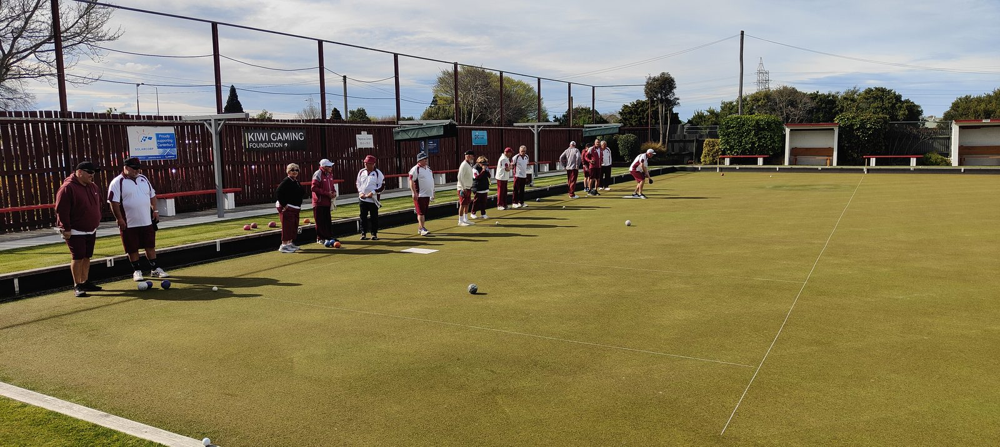
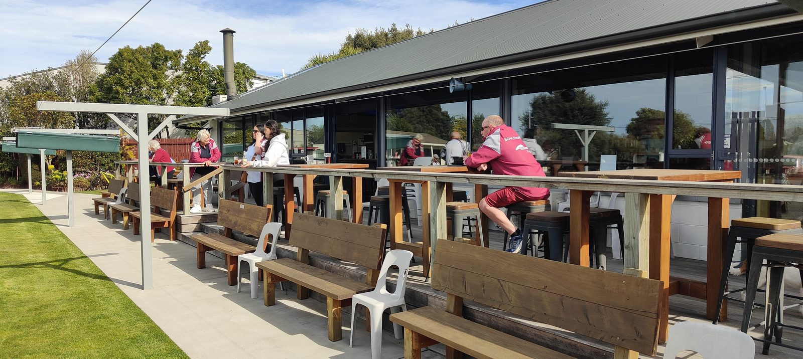

Bowls Hornby welcomes new players at any time of the season — no experience needed, just come along and have a go.
Two full-size greens on the Hornby Domain, and a clubhouse deck that's just as busy as the rinks.


You don't need equipment, experience, or a uniform to try your first end. Phone our coach Dave Vincent on 021 070 1862 — he'll set you up with a bowl and a friendly face to show you the ropes.